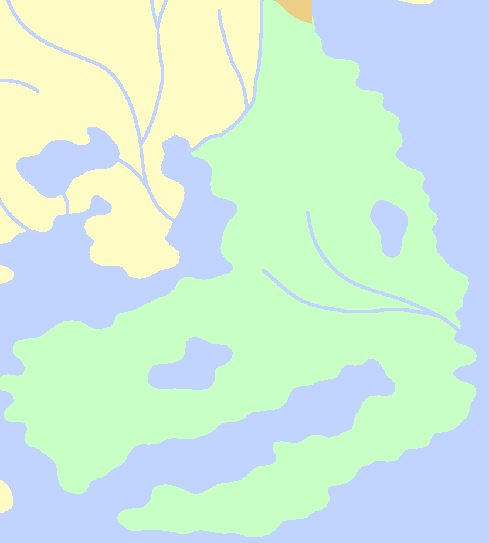
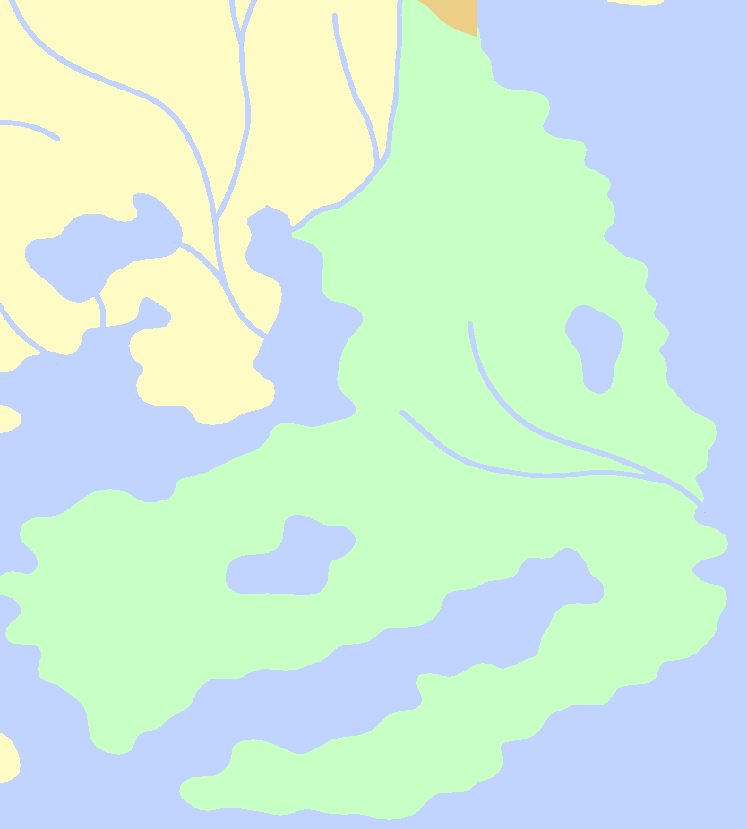

Drosera
Following the fall of the Calla Dominion, the people of Drosera found themselves to be in the next best position to become the chocolate capital of the world. For this purpose they established the city of Qakarus, which sat across the Gulf of Lamisia from the lupinean city of Lamis, which distributes the product through the rest of the Lupine, as well as beyond.
Rainforests and swamps to the south of Drosera experience seasonal floods. Society has learned to adapt around these floods, and buildings have been made to adapt for whenever they occur.
Close